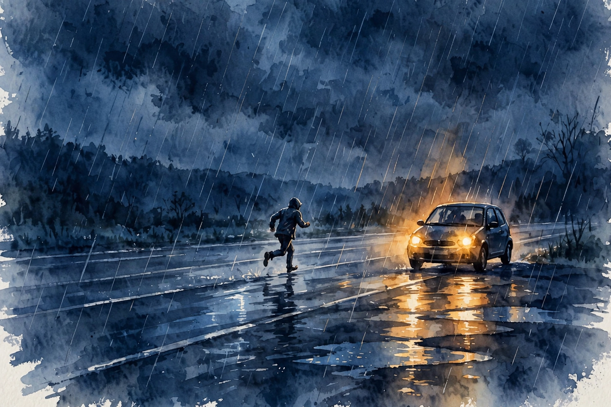

Interactive companion
Courage

The platform
The philosopher Aristotle counted courage among the foundational virtues. Without courage, how do you stand up for the right thing, pursue your true calling, or be a good leader, parent, or friend? One reason we fail these challenges: we misunderstand what bravery is.
April 2017. Two trains stop on a Bronx subway platform in New York City. Through the doors of one train, someone shoots a video. On the other side of the platform, a woman stands trapped between subway doors: her head outside the car, her body caught inside, motionless, half in and half out.
One person walks by, slowly. Then another, then a third. Nobody hurries. Nobody helps. The seconds tick by and you want to shout at the screen. Psychologists call this the bystander effect: many people could help, nobody steps forward, everyone waits for somebody else.
Nugget 1 · The platform
Horrors happen while the world watches
What happened. A trapped woman, a platform of passersby, and a viral video of nobody helping.
Why it matters. The video spread because it named a fear we all carry: in a crisis, will people walk past us?
The principle. Waiting for someone else is the default. Courage starts by refusing the default.
Source: episode transcript, 00:00:51. Source fact
The person holding the phone
An Instagram story about the incident carried the message that if you thought your day was bad, you should be glad you were not her. But the episode points at someone the video never shows: the person holding the phone.
Interpretation If you feel shock that people walk by without helping, what does it say that you shoot a video about it? Help was in fact on the way. Subway employees worked to open the doors. The question is not whether strangers are cruel. It is what you do with your own two hands.
“All it takes for the triumph of evil is for good men to do nothing.”
Misattributed to Edmund Burke, via the episode
Abigail on I-5
The episode host once interviewed Abigail Marsh on his podcast. Years ago, Abigail was in college, home for the summer in Washington state. After dinner with a friend in Seattle, she drove toward Tacoma on Interstate 5 around midnight, a busy, heavily trafficked freeway.
Near the crest of the highway she saw a dog running across the freeway. She swerved, hit the dog anyway, and the car fishtailed across several lanes, spun around, and came to rest in the fast lane, facing backward into oncoming traffic just past the crest of the overpass. She called it the most terrified she had ever been.
Cars came over the crest and swerved at the last second, shaking her car each time. She knew it was a matter of time before one hit her. Then a man appeared at her passenger window and offered help.
She remembered her mother advice: do not let strange men into your car. As more cars whooshed over the crest, she said she did need help. He had her move to the passenger seat, waited for a break in traffic, ran around the car, climbed into the driver seat, figured out the car was still in drive, put it in park, started the engine, waited again, gunned it, pulled a sharp U-turn on the interstate, and reached an off-ramp. Then he walked back to his own car and drove off into the night. She never saw him again.
Piecing it together later, Abigail realized the man risked his life three times: running across six lanes of highway to reach her, running around the car to the driver seat, and gunning the U-turn. At the moment he decided, she was a stranger. The question stayed with her through her career as a psychologist and neuroscientist: why had he done it?
Nugget 2 · Three risks
He decided in a split second, for a stranger
What happened. A driver saw a spun-out car in the fast lane, pulled over at midnight, and crossed six lanes of traffic three times to save a woman he had never met.
Why it matters. There was no time for calculation and no personal gain. The decision came from somewhere faster than thought.
The principle. Courage often looks like a reflex, not a choice. Train the reflex by widening the circle of who counts.
Source: episode transcript, 00:03:33. Source fact
The kidney donors
Abigail went on to study extraordinary altruists, including non-directed kidney donors: people who donate a kidney not to family or friends but to total strangers. One listener, Lucia Lloyd, heard a podcast episode on the topic and wrote in. She was struck by a donor who said he believed God put us on earth to help people, and she thought she believed that too.
“I think God put us on this earth to help people.”
Lucia Lloyd, listener note, via the episode
Lucia wrote that the obvious answer, if she wanted to resemble the donors, was to donate her own kidney to a stranger, and that she started the process. The host called it one of the best notes in a decade of producing the show.
Nugget 3 · The donor
The question that made no sense
What happened. Asked why they donated a kidney to a stranger, many donors found the question strange. If you have two kidneys and someone will die without one, the choice felt obvious.
Why it matters. What looks like extreme sacrifice from the outside feels like plain logic from the inside.
The principle. Moral clarity is a function of the circle you draw. Draw it wider and hard choices get easy.
Source: episode transcript, 00:07:06. Source fact
Social discounting
Most of us live inside a phenomenon called social discounting. We are generous to the people closest to us and grow far less generous as the connection grows even slightly more remote. Asked whether you would donate a kidney to your child, most say yes. To a friend? A co-worker? A stranger? The generosity falls off a cliff.
The altruistic donors Abigail studied made little distinction between their innermost circle and strangers. For people like Lucia, there is not much of a line between us and them. Extraordinary altruists treat people they never met as deserving the same kindness.
Social discounting: the generosity curve
Willingness to help as social distance grows
Source: episode transcript, 00:08:42. Source fact
Illustrative: the episode describes the steep fall and the flat curve but gives no numbers. The shapes are the claim.
The amygdala
Abigail scanned the brains of altruistic kidney donors and compared them with less altruistic people. She found a difference in the amygdala. Extremely altruistic people seem to have larger amygdalas than the rest of us.
The amygdala helps us recognize distress in other people. Extreme altruists appear more sensitive to the pain of others. Psychopaths, tellingly, tend to have smaller amygdalas, which fits their trouble recognizing distress.
Think of people who rush into danger for strangers: diving into stormy seas, dashing into burning buildings. They are not seeing strangers as strangers. They see them as brothers and sisters.
Nugget 4 · The amygdala
Courage starts as sensitivity
What happened. Brain scans showed larger amygdalas in extreme altruists and smaller ones in psychopaths.
Why it matters. Bravery may begin one step earlier than action: in noticing that someone is in pain.
The principle. If you want to act bravely, first practice noticing. Attention is the on-ramp to courage.
Source: episode transcript. Source fact
The burning house
Some years ago, the mayor of Newark, New Jersey, Cory Booker, came home from work to find his neighbor house on fire, with the neighbor screaming that her daughter was trapped inside. Without thinking, Booker raced in with his security detail behind him, fought through smoke to the bedroom, found the daughter barely conscious, flung her over his shoulder, and staggered back through a kitchen engulfed in flames as embers rained down. He reached the yard and collapsed, and an ambulance took him to the hospital with smoke inhalation and second-degree burns to his hands.
Interviewed afterward on CBS, Booker said the experience terrified him, that he could see nothing but flames, and that at one point he thought they were trapped and could not get out. He did not sound like an action hero. He sounded frightened. That is the point.
Interpretation In our minds we confuse courage with fearlessness. When we feel frightened in a hard situation, we tell ourselves this proves we are not brave, because brave people feel no fear. The episode rejects that idea completely. Courageous people are not fearless. They expanded their circle of love until strangers counted the way family counts.
The reframe
“Ask how you can love more. How you can love better.”
Narration, Hidden Brain episode 4
That is the great lesson of the altruism research, in the episode own words: if you want to be brave, do not ask how to be less frightened. Ask how to love more.
Nugget 5 · The reframe
Stop fighting fear. Start widening love.
What happened. Booker felt terror in the fire. The freeway stranger acted in seconds. The donors gave kidneys to strangers. None of them were fearless.
Why it matters. The fearlessness model makes courage unreachable. The love model makes it trainable.
The principle. Do not ask how to feel less afraid. Ask who else counts as yours.
Source: episode transcript, 00:13:22. Source fact
The host own story
The host closes with a personal story about a different kind of risk. He finished college with an engineering degree, all set for an MBA and corporate life. Given a couple of months off, he worked at a local newspaper and fell in love with journalism: the delight of sharing ideas and explaining things.
Telling his parents he would chuck the engineering degree for journalism worried his father, who asked how he would make ends meet. People later called the choice brave. He says he was not being brave. He was in love with the work. The podcast now receives millions of downloads every month, airs on more than 400 public radio stations, and in 2025 alone he visited 16 cities on a live tour. Things worked out, he says, not because he was fearless, but because he found something bigger than his fear.
Watch the episode
Official Hidden Brain episode video for Courage.The official Hidden Brain episode video, embedded via youtube-nocookie.com, the only external dependency on this page.
Nugget index
- Nugget 1. Horrors happen while the world watches (The platform)
- Nugget 2. He decided in a split second, for a stranger (Abigail on I-5)
- Nugget 3. The question that made no sense (The kidney donors)
- Nugget 4. Courage starts as sensitivity (The amygdala)
- Nugget 5. Stop fighting fear. Start widening love. (The reframe)